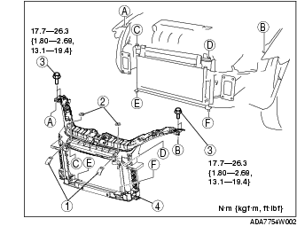

Shroud panel removal/installation
1. Disconnect the negative battery cable.
2. Remove the front bumper. (See FRONT BUMPER REMOVAL/INSTALLATION.)
3. Remove the front combination light. (See FRONT COMBINATION LIGHT REMOVAL/INSTALLATION.)
4. Remove the front bumper reinforcement.
5. Remove the bonnet lock. (See BONNET REMOVAL/INSTALLATION.)
6. Remove in the order indicated in the table.

7. Install in the reverse order of removal.